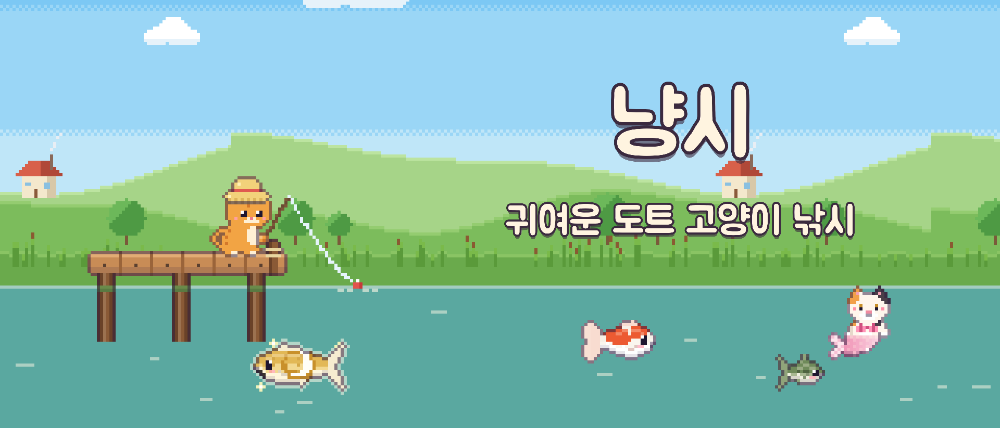
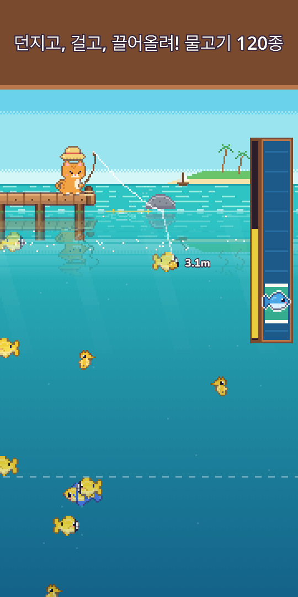
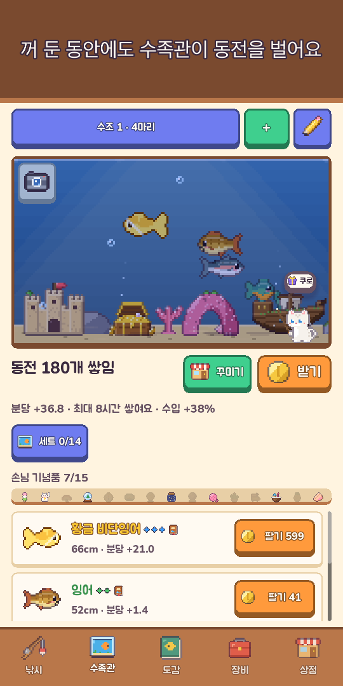
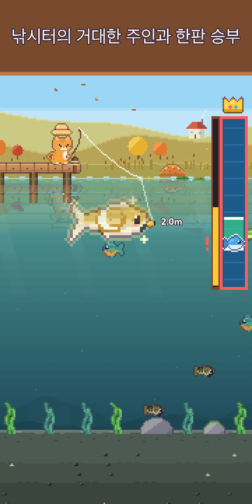
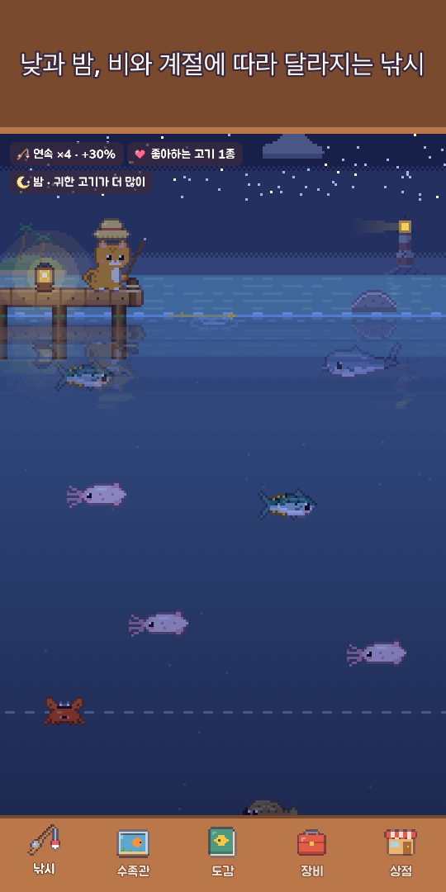
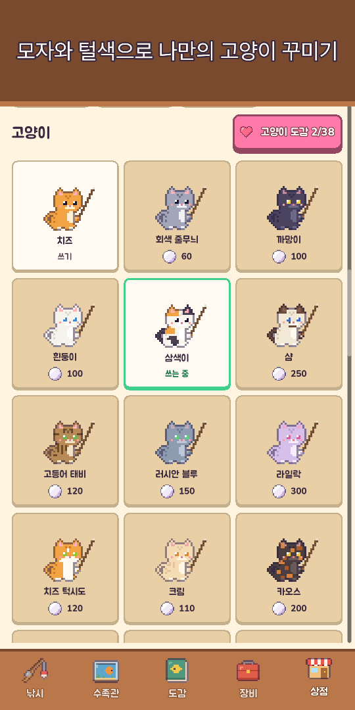
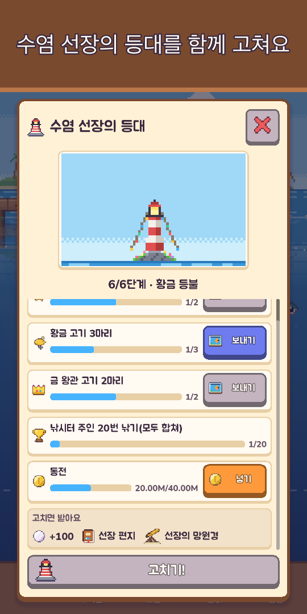
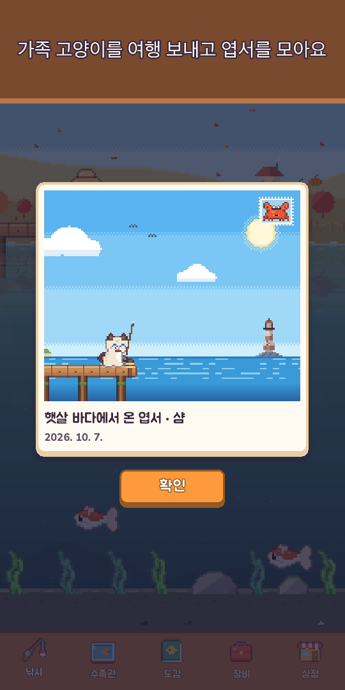

냥시: 고양이 낚시
귀여운 도트 고양이 낚시
낚싯대와 잠수복을 챙겨요! 물고기 120종을 낚고, 바닷속에 들어가 생물을 찍고, 전설보다 귀한 고양이 인어를 만나요.








낚싯대를 든 고양이와 함께 떠나는 포근한 낚시 여행!
냥시는 엄지 하나로 즐기는 귀여운 도트 낚시 게임이에요. 꾹 눌렀다 떼서 던지고, 물속에 보이는 물고기 쪽으로 미끼를 살살 끌어가고, 잡기 막대로 손맛을 느끼며 끌어올리세요.
- 한 손 조작꾹 눌러 던지기 · 옆으로 밀어 미끼 움직이기 · 눌러서 잡기. 찌가 쑥 들어갈 때 톡 누르면 챔질 성공, 한발 앞서 시작해요(안 해도 괜찮아요). 퍼지는 물결 · 물보라 · 손끝 진동 · 지갑으로 날아드는 동전까지
- 열 낚시터, 물고기 120종들판 연못 · 산골 강 · 햇살 바다 · 산호초 · 얼음 호수 · 심해 · 잠긴 신전 · 구름 호수 · 화산섬 · 맹그로브 숲
- 귀한 황금 물고기, 가끔 몰려오는 귀한 물고기 떼, 달빛 잉어 · 별고래 같은 전설, 하루 한 번 나타나는 낚시터의 거대한 주인
- 다이빙잠수복을 입고 낚시터마다 물속을 헤엄치며 낚을 수 없는 생물을 사진으로 남겨 사진 도감을 채워요. 손전등을 켜고 바닥 아래 숨은 깊은 곳도 찾아봐요
- 고양이 인어낚시터마다 한 마리, 전설보다 귀한 냥어가 살아요. 수족관에 데려오거나 놓아주고 행운의 축복을 받아요
- 루어 25종 · 5단계좋은 루어일수록 귀한 고기가 잘 물고, 냥어 · 전설을 부르는 특별한 루어도 있어요. 힘센 고기와 버티다 줄이 끊어질 수도 있으니 조심!
- 살아 있는 하늘기기 시계에 맞춰 낮과 밤이 바뀌고 비 · 눈 · 무지개에 따라 입질이 달라지고 별똥별을 누르면 진주를 줘요. 계절 풍경과 실제 달 모양, 낚시터마다 6시간 하늘 예보, 큰 고기가 잘 무는 반짝이는 황금 물결 자리까지
- 도감밤 · 비 · 새벽 · 계절, 좋아하는 때가 있는 물고기를 노리고 가장 큰 기록으로 금왕관을 받아요. 처음 낚은 날의 하늘(때 · 날씨 · 계절 · 낚시터)도 도감에 남아요
- 수족관넣어 둔 물고기가 게임을 꺼 둔 동안에도 동전을 벌어요. 침몰선 · 산호 아치로 꾸미고, 수조 세트로 수입 보너스, 수조 배치는 짧은 코드로 공유. 물고기를 누르면 낚은 곳 · 온 날 · 함께한 날이 적힌 수첩이 열려요
- 고양이와 수집개구리 모자부터 왕관까지, 털색 · 계절 모자, 아늑한 고양이 자리. 가족 고양이를 3시간 여행 보내면 도트 엽서를 들고 오고, 한동안 비웠다 오면 고양이 일기에 한 줄 남겨요
- 이웃과 축제이웃 고양이가 수족관에 놀러 와 기념품을 두고 가고, 우정이 깊어지면 새 이야기 · 작은 선물 · 단짝 모자를 줘요. 주간 낚시 대회, 이달의 함께 낚기, 매주 찾아오는 손님 고기, 해마다 축제 다섯(벚꽃 · 여름 · 핼러윈 · 성탄 · 새해) — 도장을 모아 계속 남는 축제 장식으로 바꿔요
- 등대지기 수염 선장이 띄운 병 속 편지를 모으고, 낡은 등대를 함께 고쳐요
- 내 속도로 성장낚싯대 · 릴 · 낚싯줄 · 미끼 · 수조 강화, 낚은 물고기로 미끼를 만들어 그 고기 노리기(전설 고기 빼고), 오늘의 의뢰와 오늘의 선물(하루 빠져도 처음으로 돌아가지 않아요), 함께한 날마다 선물
- 포근한 덤풍경 보기로 단추를 숨기고 풍경만 바라보기, 낚시 일지 속 사진첩에 수족관 · 고양이 자리 사진 최근 12장, 하루 한 번 풍경 속에 숨는 작은 친구를 찾으면 진주
- 인터넷 없이도 언제든 플레이
기본 무료 게임이에요. 진주 묶음 · 스타터 팩 · 후원자 팩(광고 없이 보상 받기 · 왕관 모자 · 오프라인 수입 한도 2배)은 원할 때만 사면 되고, 돈을 쓰지 않아도 물고기 120종을 모두 낚을 수 있어요.
강제 광고도, 배너도 없어요. 광고는 판매 금액 두 배처럼 원할 때만 골라 보는 보상형뿐이에요.
오늘은 어떤 물고기가 물까요? 지금 던져 보세요!